-
Usaquén
Recibió su nombre del cacique Usaque, es la número 1 de Bogotá y
hasta 1954 fue un municipio de Cundinamarca. Con una extensión total
de 6.531,32 hectáreas, se ubica en el extremo nororiental de la
ciudad y limita, al occidente con la Autopista Norte, que la separa
de la localidad de Suba; al sur con la Calle 100, que la separa de
la localidad de Chapinero; al norte, con los municipios de Chía y
Sopó y al oriente, con el municipio de la Calera. Esta localidad
está dividida en nueve UPZ (Unidades de Planeamiento Zonal): Paseo
Los Libertadores, Verbenal, La Uribe, San Cristobal Norte, Toberín,
Los Cedros, Usaquén, Country Club y Santa Barbara. Su población está
conformada por 449.621 habitantes
-
Chapinero
Es la número 2 de Bogotá, está ubicada en el centro-oriente de la
ciudad y limita, al norte, con la calle 100 y la vía a La Calera,
vías que la separan de la localidad de Usaquén; por el occidente, el
eje vial Autopista Norte-Avenida Caracas que la separa de las
localidades de Barrios Unidos y Teusaquillo; en el oriente, las
estribaciones del páramo de Cruz Verde, la Piedra de la Ballena, el
Pan de Azúcar y el cerro de la Moya, crean el límite entre la
localidad y los municipios de La Calera y Choachí. El río Arzobispo
(calle 39) define el límite de la localidad al sur, con la localidad
de Santa Fe. Chapinero tiene una extensión total de 3.898,96
hectáreas con un área rural de 2.664,25 ha (68%) y un área urbana de
1.234,71 ha (32%).
-
Santa Fé
Es la número 3 de la ciudad, limita al norte con la localidad de
Chapinero, al sur con la localidad de San Cristóbal, Antonio Nariño,
al oriente con el municipio de Choachí y al occidente con las
localidades de Teusaquillo, Mártires y Antonio Nariño.
-
San Cristobal
El nombre de la localidad se tomó de su asentamiento más antiguo: el
barrio San Cristóbal. La localidad número 4 está ubicada en el
suroriente de Bogotá, entre las localidades de Santa Fe (norte),
Usme (sur), Rafael Uribe Uribe y Antonio Nariño (occidente) y por el
oriente es límite metropolitano con los municipios de Choachí y
Ubaque. Entre las veinte localidades ocupa el quinto lugar en
extensión, tiene suelo tanto urbano como rural, este último
corresponde a la estructura ecológica principal de los cerros
orientales de Bogotá.
-
Usme
Es la número 5 de la capital. Limita al norte con las localidades de
San Cristóbal, Rafael Uribe y Tunjuelito; al sur con la localidad de
Sumapaz; al oriente con los municipios de Ubaque y Chipaque y al
occidente con la localidad de Ciudad Bolívar y el municipio de
Pasca. Cuenta con 300.000 habitantes aproximadamente. Está dividida
en 7 UPZ (Unidades de Planeación Zonal) conformadas así: UPZ 52 La
Flora, UPZ 56 Danubio, UPZ 57 Gran Yomasa, UPZ 58 Comuneros, UPZ 59
Alfonso López, UPZ 61 Usme Centro-veredas, UPZ 60 Parque Entre
Nubes. La localidad de USME es primordialmente rural y cuenta con
grandes fuentes de recursos naturales e hídricos lo que la hace muy
atractiva para el ecoturismo.
-
Tunjuelito
Es la número 6 de la ciudad, toma su nombre del diminutivo de
"TUNJO", figura antropomorfa Chibcha elaborada en oro. Limita al
norte con las localidades de Bosa, Kénnedy y Puente Aranda, al sur
con Usme, al oriente con la localidad Rafael Uribe, Uribe y Usme y
al occidente con Ciudad Bolívar. Tunjuelito tiene una extensión de
1.062.33 hectáreas en donde predomina el estrato 2.
-
Bosa
Es la localidad número 7 de Bogotá. Está ubicada en el extremo
suroccidental de la ciudad, Su extensión es de 2.466 hectáreas,
correspondiente a un 2.87% del total del territorio del Distrito.
Limita al sur con la Autopista Sur, la localidad de Ciudad Bolívar y
el municipio de Soacha; al occidente con los municipios de Soacha y
Mosquera; al norte con Mosquera y el río Bogotá; y por el oriente
con las localidades de Ciudad Bolívar y Kénnedy. Cuenta con 508.828
habitantes y cinco UPZ (Unidades de Planeamiento Zonal): Apogeo,
Bosa Occidental, Bosa Central, El Porvenir y Tintal Sur. Bosa es
considerado como el segundo poblado Chibcha después de Bacatá,
territorio gobernado por el Cacique Techotiva.
-
Kennedy
Es la localidad número 8 de la ciudad, es una de las más pobladas
del distrito, está ubicada en el sur occidente de la sabana de
Bogotá y se localiza entre las localidades de Fontibón al norte,
Bosa al sur, Puente Aranda al oriente y un pequeño sector colinda
con las localidades de Tunjuelito y Ciudad Bolívar, por los lados de
la Autopista Sur con Avenida Boyacá, hasta el río Tunjuelito. El
total de la localidad es de 3855.45 hectáreas de las cuales el 98.1%
es área urbana y 1.8% es área rural. En relación con la extensión
del Distrito Capital, la localidad de Kennedy representa el 11,12%,
el tercer puesto en extensión.
-
Fontibón
Es la número 9 de la ciudad, Su extensión es de 3.327,2 hectáreas,
representando el 3.9% del distrito. Limita al norte con la Autopista
El Dorado, al oriente con la carrera 68, al sur con la Avenida
Centenario y al occidente con el río Bogotá. Su temperatura promedio
es de 14 grados centígrados. Es el principal eje articulador del
desarrollo industrial dada la presencia de una importante zona
industrial, la zona franca y su ubicación estratégica regional al
ser la conexión del distrito con los municipios de Mosquera, Funza,
Madrid y Facatativá.
-
Engativá
Es la número 10 de Bogotá, está ubicada al noroccidente de la
capital y limita al norte con el río Juan Amarillo, el cual la
separa de la localidad de Suba, al Oriente está bordeada por la
Avenida del Congreso Eucarístico o Avenida 68, límite con la
localidad de Barrios Unidos; al sur con la Avenida Jorge Eliécer
Gaitán o Autopista El Dorado y el antiguo camino a Engativá, el que
la separa de Fontibón y al occidente limita con el río Bogotá.
Cuenta con tres humedales: (La Florida, Jaboque y Santa María del
Lago). Tiene una extensión de 3.612 hectáreas, que corresponde a
4,18% del área del Distrito Capital; por su extensión es la décima
localidad del Distrito Capital. Según fuente del DANE se estima que
la localidad cuenta con 1.300.000 habitantes.
-
Suba
Es la localidad número 11 de la ciudad, se encuentra ubicada al
noroccidente de la ciudad y es la cuarta localidad más extensa de la
capital, con 10.056 hectáreas después de Sumapaz, Usme y Ciudad
Bolívar, respectivamente. Su suelo urbano comprende 6.271 hectáreas
de las cuales 559 son protegidas; el suelo rural comprende 3.785
hectáreas de las cuales 910 corresponden a suelo de protección
rural; el suelo de expansión es de 874 ha. Limita al Norte con el
municipio de Chía; al Sur con la localidad de Engativá; al Oriente
con la localidad de Usaquén y al Occidente con el municipio de Cota.
-
Barrios Unidos
Es la localidad número 12 de la ciudad, tiene una extensión total de
1.189,52 hectáreas , todas ellas en el área urbana y es la quinta
localidad con menor extensión del Distrito. Cuenta con una población
de 254.162 habitantes. Se ubica en el noroccidente de la ciudad y
limita, al occidente, con la Avenida carrera 68, que la separa de la
localidad de Engativá; al sur, con la calle 63, que la separa de la
localidad de Teusaquillo; al norte con la calle 100, que la separa
de la localidad Suba y, al oriente, con la Avenida Caracas, que la
separa de la localidad de Chapinero. La localidad está cruzada por
el río El Salitre y el canal Río Negro, con un terreno relativamente
plano que forma parte de la sabana de Bogotá.
-
Teusaquillo
Es la localidad número 13 del Distrito. Se encuentra ubicada en el
centro geográfico de la ciudad. Es un territorio completamente
urbanizado, cuenta zonas verdes en sus parques metropolitanos, la
Ciudad Universitaria y en algunas avenidas principales. Esta
localidad posee una enorme riqueza arquitectónica, histórica,
cultural y simbólica para la ciudad, pues es el punto de referencia
para el inicio de la arquitectura moderna de Bogotá, donde se inició
un proceso urbanístico con la aceptación de nuevos valores
arquitectónicos. Su área geográfica es de 1.421 hectáreas.
-
Martires
Es la número 14, debe su nombre en honor a los mártires quienes
perdieron su vida en las luchas por la independencia española y se
encuentra ubicada en el área central de la ciudad. Limita al norte
con la localidad de Teusaquillo, al sur con la localidad de Antonio
Nariño, al oriente con la localidad de Santa Fe y al occidente, con
la localidad de Puente Aranda. De acuerdo al censo del año 2005 la
localidad cuenta con una población de 95.969 personas, siendo el
48,7% hombres y el 51,3% mujeres con un territorio principalmente
urbano distribuido a lo largo de 655 hectáreas que equivalen al 2%
del área total urbanizada del Distrito Capital.
-
Antonio Nariño
Es la número 15 de Bogotá, debe su nombre al precursor de la
Independencia y traductor de los Derechos del Hombre quien vivió
gran parte de su vida en una hacienda localizada en esta zona. Está
ubicada en la parte suroriental de la ciudad, limita por el
nororiente con las localidades de Santa fe y Los Mártires, por el
noroccidente con la localidad de Puente Aranda y por el suroccidente
con las localidades de Tunjuelito y Rafael Uribe Uribe, por el
suroriente con la localidad de San Cristóbal. Según el último censo,
año 2005, la localidad cuenta con aproximadamente 115.148
habitantes. La extensión del territorio es de aproximadamente 1.587
KM2 (493.74 hectáreas).
-
Puente Aranda
Es la localidad número 16 de Bogotá. Debe su nombre al puente que
fue construido por el oidor Francisco de Anuncibay, en los terrenos
húmedos y cenagosos sobre los ríos Chinúa y San Agustín. Este puente
existió hasta 1944 cuando se inició la construcción de la Avenida de
las Américas. Limita al norte con la localidad de Teusaquillo, al
sur con la localidad de Tunjuelito, al oriente con las localidades
de Los Mártires y Antonio Nariño y al occidente con las localidades
de Fontibón y Kennedy. Su extensión es de 1.724 hectáreas, las
cuales conforman cincuenta y cinco barrios.
-
La Cadelaria
Es la localidad número 17 de la ciudad, se constituye en la más
pequeña de Bogotá, con una extensión de 183.89 hectáreas según datos
del Departamento de Planeación Distrital. Está ubicada en el sector
centro–oriente de Bogotá, su área está destinada para la
construcción de equipamientos de nivel urbano y metropolitano, y no
cuenta con zonas de tipo rural. La localidad está conformada por los
barrios Belén, Las Aguas, Santa Bárbara, La Concordia, Egipto,
Centro Administrativo y Catedral. Su población es de 23.615
habitantes permanentes.
-
Rafael Uribe Uribe
Esta localidad es la número 18, una de las más jóvenes de Bogotá. Se
encuentra ubicada al sur oriente de la ciudad, cuenta con
aproximadamente 423.000 habitantes y limita con las localidades de
San Cristóbal al oriente, Tunjuelito por el occidente, con Antonio
Nariño al Norte y al sur con Usme. La localidad es un territorio
irregular en una extensión de 1.310 hectáreas.
-
Ciudad Bolívar
Es la número 19 de Bogotá, es la tercera localidad más extensa
después de las localidades de Sumapaz y Usme, se ubica al sur de la
ciudad y limita al norte, con la localidad de Bosa; al sur con la
localidad de Usme; al oriente con la localidad de Tunjuelito y Usme
y al occidente con el municipio de Soacha. Cuenta con una población
aproximada de 713.764 habitantes, según datos del DANE
correspondientes al año de 2005, está compuesta por grupos
indígenas, campesinos, afrodescendientes, entre otros. 360 barrios
integran esta localidad con 12.998 hectáreas de superficie (3.433 en
zona urbana, 9.555 en rural).
-
Sumapaz
Es la número 20 de la ciudad. La única netamente rural del Distrito
Capital, cuenta con una extensión de 78.000 Hectáreas, está
conformada por los corregimientos de San Juan, Nazareth y Betania,
con sus respectivas veredas, y en ellas habitan 5.667 campesinos
según el dato reciente del censo del DANE en la región.
 Bogotá
Bogotá

 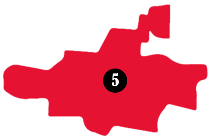
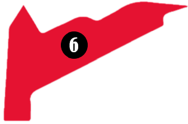
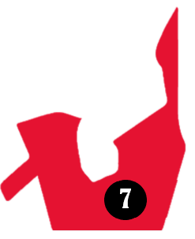
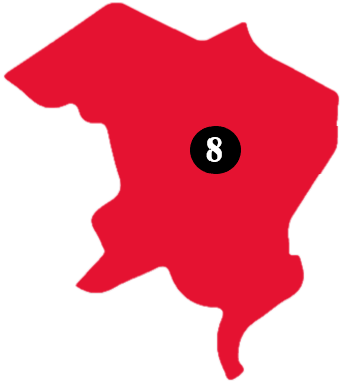
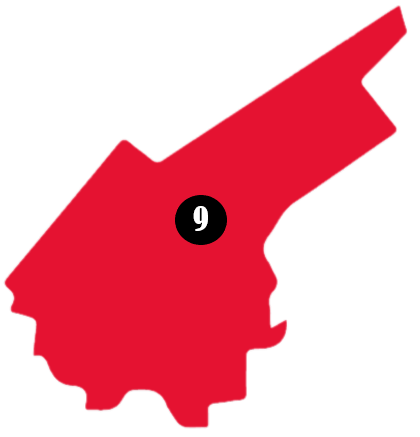
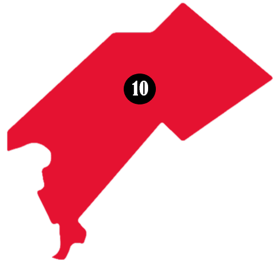
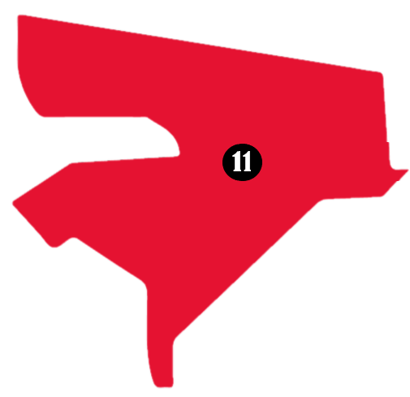
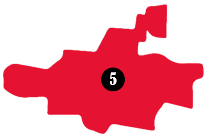
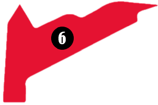
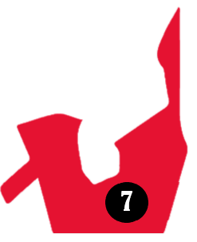
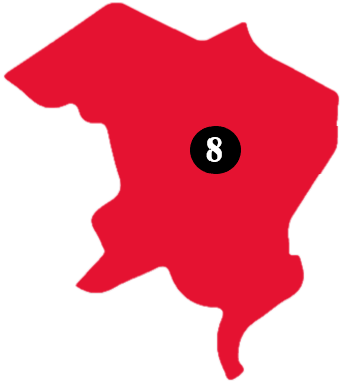
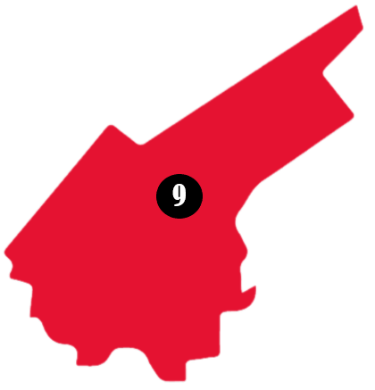
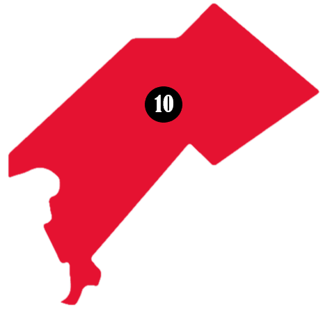
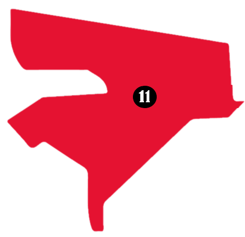

 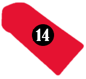
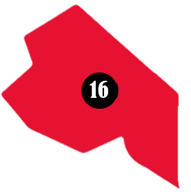
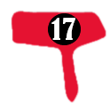
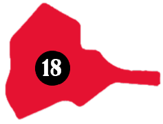
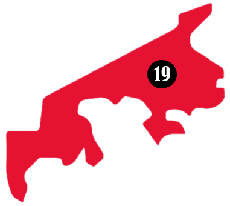
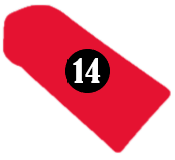
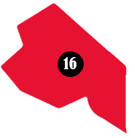
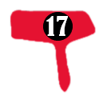
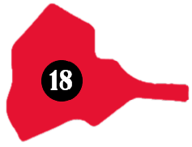
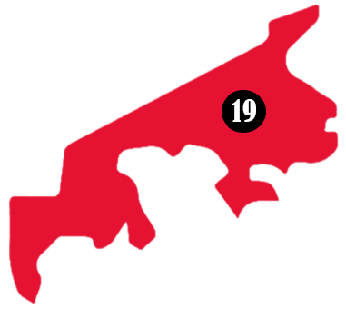